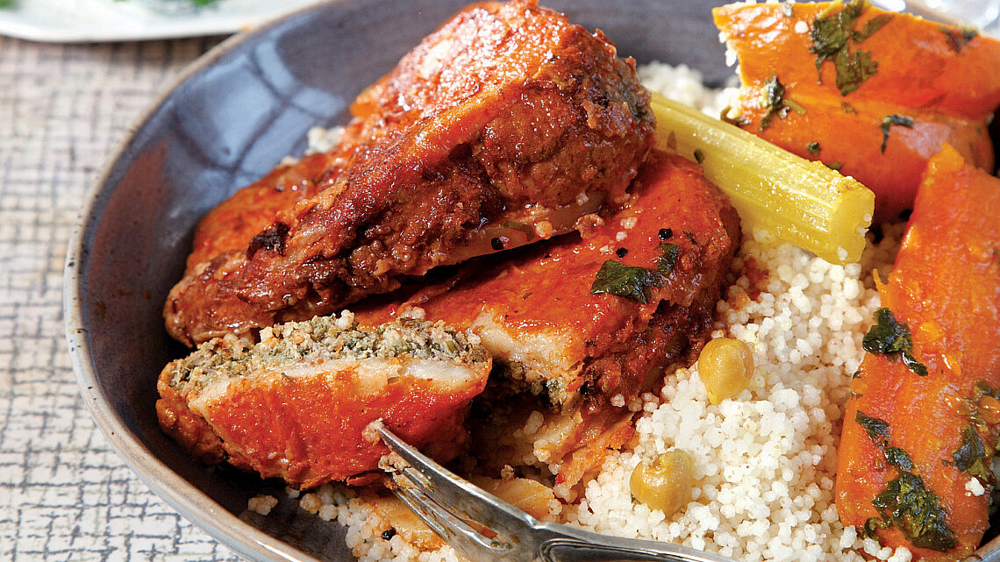

<!-- 

<mat-drawer-container [hasBackdrop]="false">
<mat-drawer mode="side"  position="end">
<app-sidenav></app-sidenav>
</mat-drawer>
<mat-drawer-content> 

<router-outlet></router-outlet>
</mat-drawer-content>
</mat-drawer-container>  -->
<!-- (toggleSidebarForMe)="sideBarToggler()" -->
<mat-toolbar>
<app-header ></app-header>
</mat-toolbar>
<mat-sidenav-container>
    <mat-sidenav mode="side" [opened]="true" position="end" >
     
     <h4 class="name">{{u.UserName}}</h4>
     <mat-divider></mat-divider>

    <button mat-button class="menu-button" routerLink="/MyHome/AllLists" routerLinkActive="list-item-active" >
         <mat-icon>home</mat-icon>
         <span> בית</span>
     </button>
   
    <button mat-button class="menu-button" routerLink="/MyHome/AllLists" routerLinkActive="list-item-active" >
        <mat-icon>info</mat-icon>
        <span> אודות</span>
    </button>

        <button mat-button class="menu-button" routerLink="/MyHome/MyMeals" routerLinkActive="list-item-active"  > 
          <mat-icon>ballot</mat-icon> <span> המנות שלי</span>
        </button>
        <button mat-button class="menu-button" routerLink="/MyHome/AddMeal" routerLinkActive="list-item-active"  > 
            <mat-icon>ballot</mat-icon> <span>  הוסף מנה</span>
          </button>
        <button mat-button class="menu-button" routerLink="/MyHome/MyMenus" routerLinkActive="list-item-active" > 
          <mat-icon>list_alt</mat-icon> <span> התפריטים שלי</span>
        </button>
        <button mat-button class="menu-button" routerLink="/MyHome/MyShares" routerLinkActive="list-item-active"  > 
          <mat-icon>present_to_all</mat-icon> <span> שיתפתי</span>
        </button> 
        <button mat-button class="menu-button"  routerLink="/MyHome/delet" routerLinkActive="list-item-active"  > 
           <mat-icon>delete</mat-icon> <span> המנות שלי</span>
        </button>
      
        <button mat-button class="menu-button" routerLink="/MyAccount/Help" routerLinkActive="list-item-active"  > 
        <mat-icon>help</mat-icon>
     </button>


    <mat-divider></mat-divider>
    </mat-sidenav>
    <mat-sidenav-content>
        <!-- mat-elevation-z4 -->
    <div class="content" > 
         <router-outlet></router-outlet>
    </div>
    </mat-sidenav-content>
</mat-sidenav-container>


  


